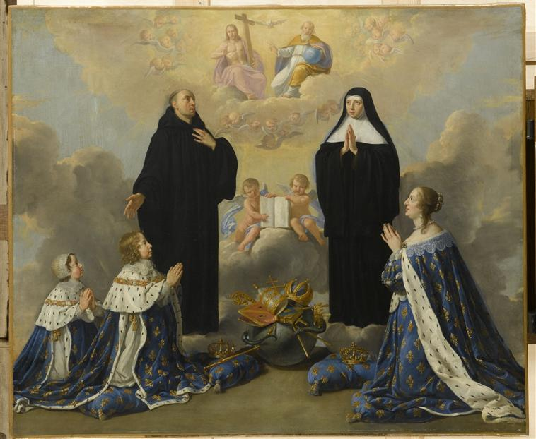

Anne d'Autriche et ses fils priant la Trinité avec saint Benoît et sa sœur Scholastique

Titre : Anne d’Autriche et ses fils priant la Trinité avec saint Benoît et sa sœur Scholastique
Auteur principal : Philippe de Champaigne
Profession : Peintre
Renseignements biographiques : Bruxelles 1602 - Paris 1674
Auteurs secondaires : Atelier de Philippe de Champaigne
Date d’exécution : 1646
Lieu d’exécution : Paris
Matériaux/Techniques : Peinture huile sur toile
Dimensions : 106 X 138 cm
Lieu de conservation actuel : Musée national des châteaux de Versailles et de Trianon. Numéro d’inventaire : MV 3440 ; INV 1168 ; LP 294.
Lieu de séjour/d’exposition initial : Appartement d’Anne d’Autriche au Val de Grâce.
Ordre : Bénédictin
Nom de la religieuse 1 : Sainte Scholastique
Statut de la religieuse 1 : Abbesse et fondatrice traditionnelle des moniales bénédictines.
Autres personnages religieux : Saint Benoît
Autres personnages laïcs : Anne d’Autriche ; Louis XIV ; Philippe d’Orléans
Commentaires : La commanditaire est Anne d’Autriche pour son appartement au Val-de-Grâce. La reine Anne d’Autriche et ses enfants Louis XIV et Philippe, duc d’Anjou, sont représentés en prière en grands costumes royaux, présentés par saint Benoît et sainte Scholastique à la Sainte-Trinité. Ancien propriétaire : Delambre. Acquis en 1833 par le musée national du Château de Versailles.
Crédits photographiques : © Réunion des musées nationaux - utilisation soumise à autorisation. © RMN-Grand Palais (Château de Versailles) / Gérard Blot. Cote cliché : 06-519213.
Références bibliographiques : SOULIE Eudore, Notices du musée national de Versailles, 1re partie : rez-de-chaussée, Paris, C. de Mourgues frères, 1880 (3e éd.). N° 3440.
CONSTANS Claire, Musée national du château de Versailles, catalogue des peintures, Paris, 1980, n° 762.
HEURTEBIZE Benjamin et TRIGER Robert, Sainte Scholastique, Patronne du Mans, Paris, Impression Saint-Pierre, Solesmes et Victor Retaux, 1897, p.483-484.